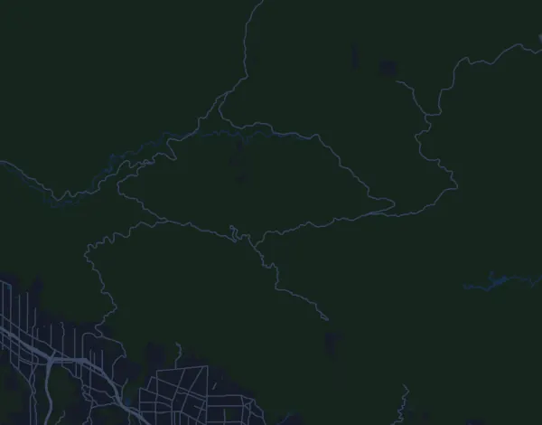

Angeles Crest 100 Mile Endurance Run 163 km
- Distanz
- 163,1 km
- Höhenmeter
- ↑ 6.087 m
- Höchster Punkt
- 1.886 m ü. M.
- Untergrund
- Trail und Gelände
- Profil
- Sehr hügelig
- Verpflegungsstellen
- 14
Höhenprofil
Mit Mila vorbereiten
Mila ist eine Lauf-Coach-App. Nimmst du einen Lauf in deinen Plan auf, plant der Coach deine Wochen bis zum Start nach deiner Form und gibt dir eine Zielzeitprognose und einen Plan für Tempo, Getränke und Verpflegung auf der Strecke.

Der richtige Lauf am richtigen Tag.
Die Strecke

Über die Strecke
Angeles Crest 100 Mile Endurance Run ist ein Traillauf in Altadena (Loma Alta Park), Vereinigte Staaten, über 163,1 km. Die Strecke hat insgesamt 6.087 Höhenmeter bergauf und 6.087 bergab, 37 m pro km, und ist damit sehr hügelig. Der höchste Punkt liegt auf 1.886 m ü. M., der tiefste auf 351 m.
Der größte Anstieg beginnt bei km 131,0: 911 Höhenmeter auf 6,5 km mit durchschnittlich 14,0 % Steigung, bis auf 1.722 m. Insgesamt hat die Strecke 26 Anstiege ab 25 Höhenmetern; der letzte beginnt bei km 161,0.
Der Veranstalter nennt 14 Verpflegungsstellen, die erste bei km 18,0 und die letzte bei km 155,3.
In der Mila-App beschreibt der Coach die Strecke ausführlich in deiner Sprache und plant dein Pacing und deine Verpflegung dafür.
Anstiege
| Beginnt bei | Länge | Höhenmeter | Steigung | Gipfel (m ü. M.) |
|---|---|---|---|---|
| km 1,3 | 6,1 km | 229 m | 3,8 % | 587 |
| km 7,7 | 6,1 km | 418 m | 6,8 % | 958 |
| km 14,8 | 9,8 km | 760 m | 7,8 % | 1.673 |
| km 27,2 | 1,7 km | 47 m | 2,8 % | 1.529 |
| km 32,6 | 3,4 km | 227 m | 6,8 % | 1.594 |
| km 48,2 | 5,2 km | 281 m | 5,4 % | 1.227 |
| km 58,6 | 4,7 km | 397 m | 8,4 % | 1.242 |
| km 63,5 | 3,9 km | 204 m | 5,3 % | 1.442 |
| km 67,6 | 890 m | 36 m | 4,0 % | 1.470 |
| km 69,9 | 3 km | 374 m | 12,5 % | 1.685 |
| km 76,5 | 1,2 km | 114 m | 9,6 % | 1.635 |
| km 77,9 | 590 m | 30 m | 5,1 % | 1.651 |
| km 78,9 | 2,1 km | 137 m | 6,6 % | 1.735 |
| km 81,5 | 2,2 km | 165 m | 7,6 % | 1.886 |
| km 84,7 | 1,5 km | 87 m | 5,7 % | 1.886 |
| km 90,2 | 1,2 km | 52 m | 4,3 % | 1.652 |
| km 93,2 | 3,8 km | 159 m | 4,2 % | 1.685 |
| km 99,7 | 1,8 km | 156 m | 8,9 % | 1.470 |
| km 111,2 | 980 m | 75 m | 7,6 % | 919 |
| km 112,3 | 3,6 km | 325 m | 9,0 % | 1.225 |
| km 116,1 | 1,2 km | 37 m | 3,1 % | 1.252 |
| km 125,6 | 4,7 km | 318 m | 6,7 % | 868 |
| km 131,0 | 6,5 km | 911 m | 14,0 % | 1.722 |
| km 141,1 | 990 m | 46 m | 4,7 % | 1.609 |
| km 155,9 | 1,1 km | 67 m | 6,2 % | 637 |
| km 161,0 | 2,1 km | 38 m | 1,8 % | 396 |
Vor dem Start
Verpflegungsstellen
| Bei | Angebot |
|---|---|
| km 18,0 | keine Angabe |
| km 24,6 | keine Angabe |
| km 39,6 | keine Angabe |
| km 53,4 | keine Angabe |
| km 68,8 | keine Angabe |
| km 79,0 | keine Angabe |
| km 85,0 | keine Angabe |
| km 90,9 | keine Angabe |
| km 101,2 | keine Angabe |
| km 116,5 | keine Angabe |
| km 126,7 | keine Angabe |
| km 136,5 | keine Angabe |
| km 145,6 | keine Angabe |
| km 155,3 | keine Angabe |
Quelle: ac100.com, abgerufen am 15. Oktober 2026
Häufige Fragen
Wann findet Angeles Crest 100 Mile Endurance Run 163 km statt?
Das Datum der nächsten Ausgabe steht noch nicht fest.
Wie lang ist Angeles Crest 100 Mile Endurance Run 163 km und wie viele Höhenmeter hat die Strecke?
Der Lauf ist 163,1 km lang mit 6.087 Höhenmetern bergauf und 6.087 bergab. Der höchste Punkt liegt auf 1.886 m ü. M.
Wie ist die Strecke von Angeles Crest 100 Mile Endurance Run 163 km?
Die Strecke ist sehr hügelig, mit durchschnittlich 37 Höhenmetern pro km. Sie hat 26 Anstiege ab 25 Höhenmetern; der größte beginnt bei km 131,0: 911 Höhenmeter auf 6,5 km. Start und Ziel liegen am selben Ort. Der Untergrund ist Trail und Gelände.
Gibt es Verpflegungsstellen bei Angeles Crest 100 Mile Endurance Run 163 km?
Ja. Der Veranstalter nennt 14 Verpflegungsstellen: km 18,0; km 24,6; km 39,6; km 53,4; km 68,8; km 79,0; km 85,0; km 90,9; km 101,2; km 116,5; km 126,7; km 136,5; km 145,6; km 155,3.
Wie teile ich mir Angeles Crest 100 Mile Endurance Run 163 km ein?
Lauf eher mit gleichmäßiger Anstrengung als mit gleichmäßigem Tempo: Lass das Tempo an den Anstiegen sinken, hol es zurück, wo es flacher wird, und halte dich auf den ersten Kilometern zurück. Die größten Anstiege beginnen bei km 7,7, km 14,8, km 58,6 und km 131,0. In Mila bekommst du einen Pace-Plan für genau diese Strecke, passend zu deiner Form.
Ähnliche Läufe
Weitere Läufe in der Nähe
- Falmouth Road Race 11,3 km15. August 2027 · Woods Hole, Falmouth, Vereinigte Staaten
- Badwater 135 217 km19. Juli 2027 · Badwater Basin, Death Valley, Vereinigte Staaten
- Big Sur International Marathon 42,2 km25. April 2027 · Big Sur, Vereinigte Staaten
- Black Canyon Ultras 100K13. Februar 2027 · Mayer (Spring Valley), Arizona, Vereinigte Staaten
- BOLDERBoulder 10K31. Mai 2027 · Boulder, Colorado, Vereinigte Staaten
- Boston Marathon 42,2 km19. April 2027 · Hopkinton, Vereinigte Staaten
Mit Mila vorbereiten
Der richtige Lauf am richtigen Tag.
Die Angaben stammen aus der Streckendatei und den Informationen des Veranstalters. Prüfe Datum, Startzeiten und Regeln beim Veranstalter.
Mila ist nicht mit dem Veranstalter oder den Sponsoren des Laufs verbunden und wird von ihnen weder gesponsert noch empfohlen. Namen und Marken gehören ihren Inhabern. Veranstalter oder Rechteinhaber? Änderung oder Entfernung beantragen